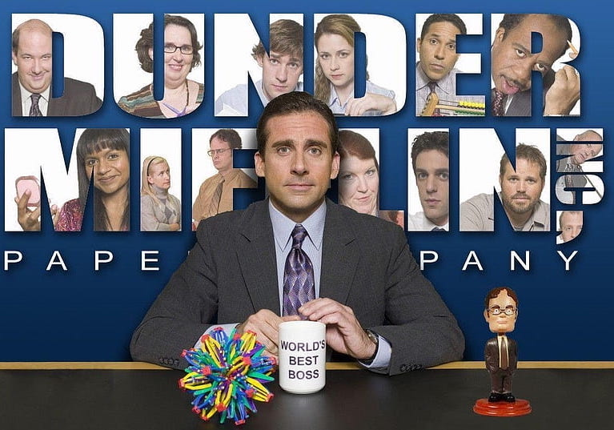
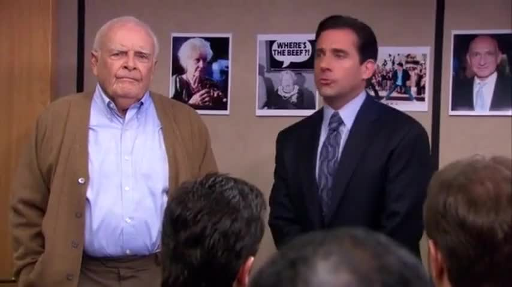
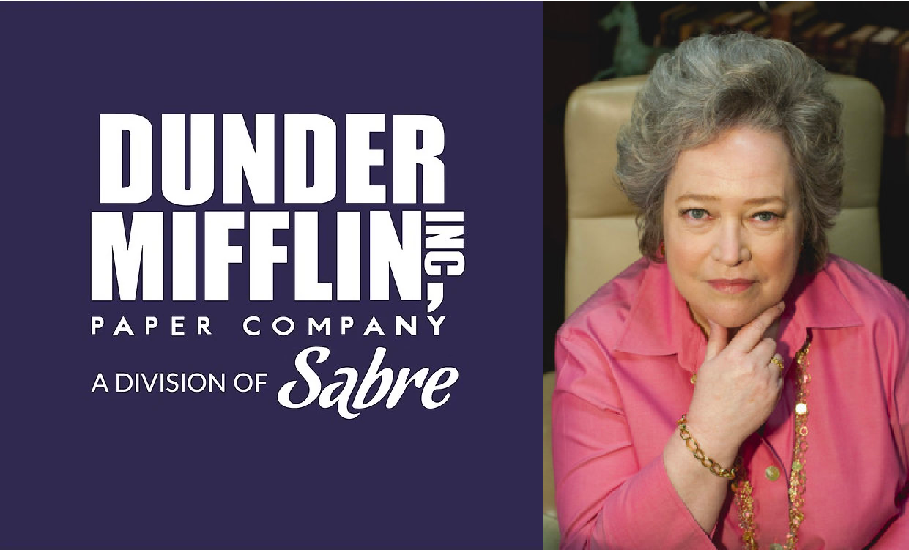
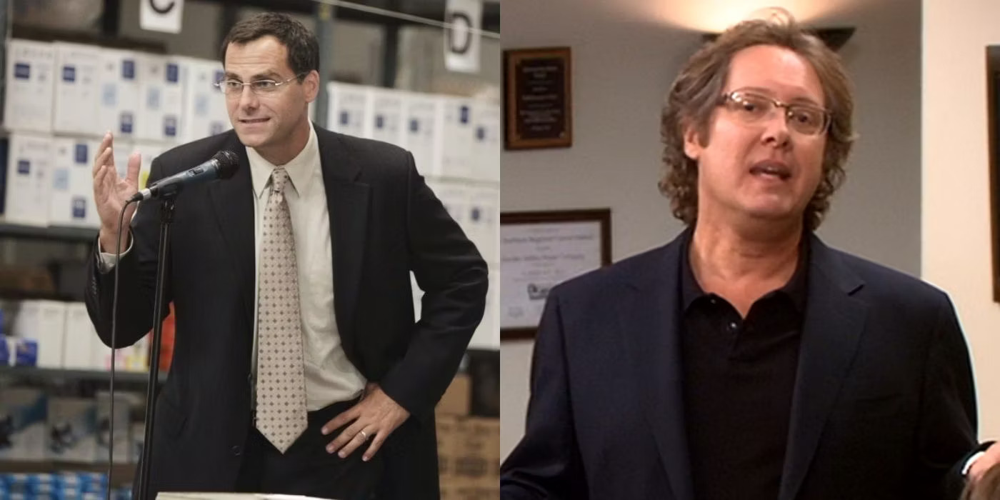

What is Dunder Mifflin? Only a few people have heard of us. An outsider may think we sell mufflers, muffins, or mittens. But that is not the case; we are the best paper supply company in the whole world! With the best customer service, we can supply all your paper supply needs! With branches in Scranton, Yonkers, New York, Utica, Camden, Nashua, Buffalo, and Albany, we are well-equipped to supply a small-town business or a large corporation.
 Dunder Mifflin was founded by Robert Dunder and Robert Mifflin in 1949. The co-founders met while touring Dartmouth College. Dunder Mifflin originally sold metal brackets for construction but soon found its way to becoming a paper supply company. Tragedy struck when Robert Mifflin took his own life due to undiagnosed depression, which over nine million Americans suffer from and is very treatable.
David Wallace became the CFO of Dunder Mifflin in 2006. He made several changes to the company, including hiring the youngest vice president of sales (my best friend and protege), Ryan Howard! Who eventually went to jail for fraud and was re-hired into the Scranton, Pennsylvania branch. Tragedy struck once again as Dunder Mifflin went bankrupt due to poor financial choices. Jolene “Jo” Bennet, the CEO of Sabre, absorbed Dunder Mifflin and integrated new products into Dunder Mifflin’s inventory, such as printers. Which may or may not catch on fire; purchase at your own risk.
 Robert California (aka. The Lizard King, aka. Bob Kazamakis) somehow convinced Jo Bennet to give the title of CEO to him. His intimidation tactics worked to make the branches successful. But eventually, his lifestyle led to financial ruin. But fair reader, there is light in the form of Dunder Mifflin’s savior, David Wallace. Now a successful entrepreneur and the developer of “Suck-It,” he bought out the company and led Dunder Mifflin to a new place of financial wealth and stability.